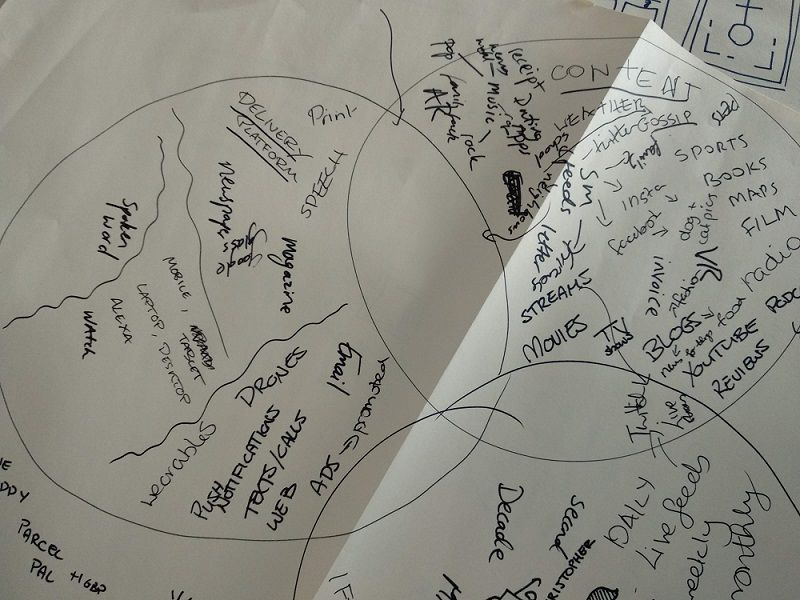
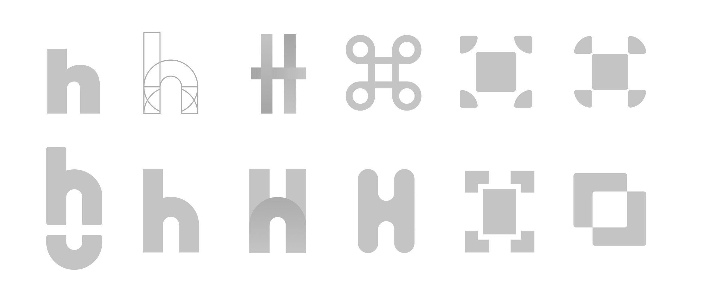
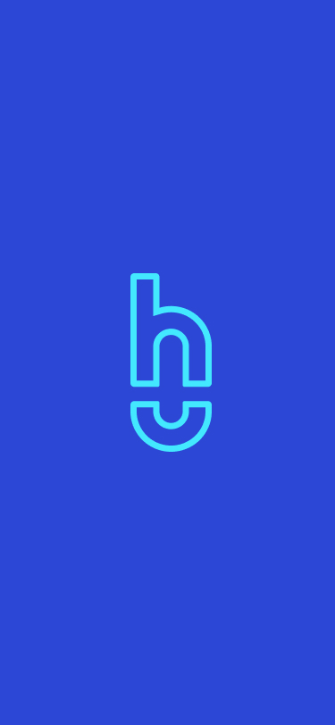
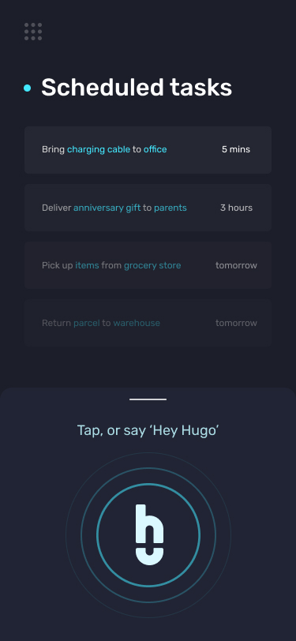
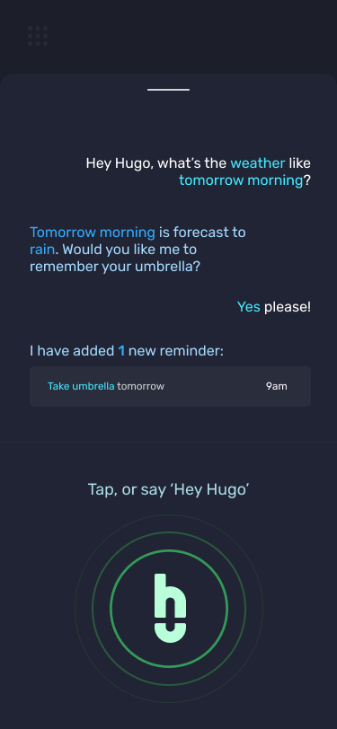

Hugo
Visualising an AI-powered drone assistant, in a day
Context
Need to add context here. Here’s some filler text to keep you occupied. Take a look at the pretty pictures also.
Role
Concept Ideation / Branding / App Design
Limitations
Some words about any problems I had during the project.


Process
Even more words about my process in completing this project. Don’t forget to include how I overcame any problems I faced.



Thoughts
Closing thoughts about the project in general. Was my end product successful. Anything that I would have done differently if I had another opportunity?